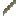

説明
①子ども 亜麻の茎を水につけて腐らせると、布にする糸がとれる。
②学生 亜麻の茎を水に1分ほど落としておくとできる。たたき石といっしょに作業台に置くと、亜麻の繊維になる（たたき石は戻る）。
③大人 水の中の細菌やかびがペクチンを分解して、繊維が皮や芯からはがれやすくなる。これが「レッティング（浸水）」。浸けすぎると繊維まで弱くなるので、昔の人は毎日ようすを見た。
④ガチ 川や池での浸水は1〜3週間、草の上で夜つゆに当てる「つゆ浸け」は数週間かかる。浸水の池はとてもくさく、中世ヨーロッパでは飲み水の川で浸けるのを禁じた町もあった ⚠️。
作り方
（作り方のレシピは無い：拾う・掘る・ほかの方法）